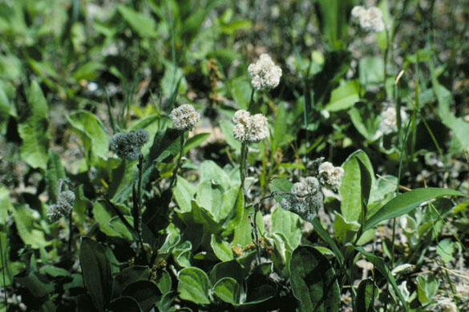
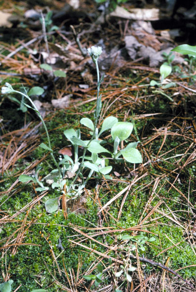
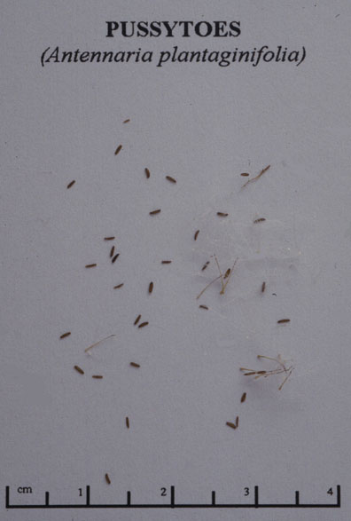

Antennaria Plantaginifolia
Family: Asteraceae
Pussy Toes
Swink/Wilhelm #3


Click to view larger photo
FLOWERING: April - June
SEED TIMING: June
HABITAT: Mostly savannas and woods, but prairies and fields too. Tends to be associated with mosses on otherwise bare soil. Does not grow in a matrix of other species. Often grows at the base of oaks.
DIAGNOSTIC FEATURES: Up to 16 inches. A small perennial which will form patches of many plants. Basal leaves broadly oval to spatulate, with 3 conspicuous veins and cobwebby hairs on the lower surface. Up to 3 inches long and 1 and 1/2 inches broad; stem-leaves much narrower, densely hairy. The flower stems bear white, wooly flower heads that resemble a kitten's paw. Dioecious - pollen-bearing male plants have flowers in compact, globose heads. Female plants have flowers in more elongated heads.
TO PICK: Stages of flowering and ripe seeds are hard to tell apart visually. After flowering, the seeds can ripen quickly. Pull on the white oval flower/seed heads; ripe seeds will come off and quickly separate into hundreds of tiny seeds and their parachutes.